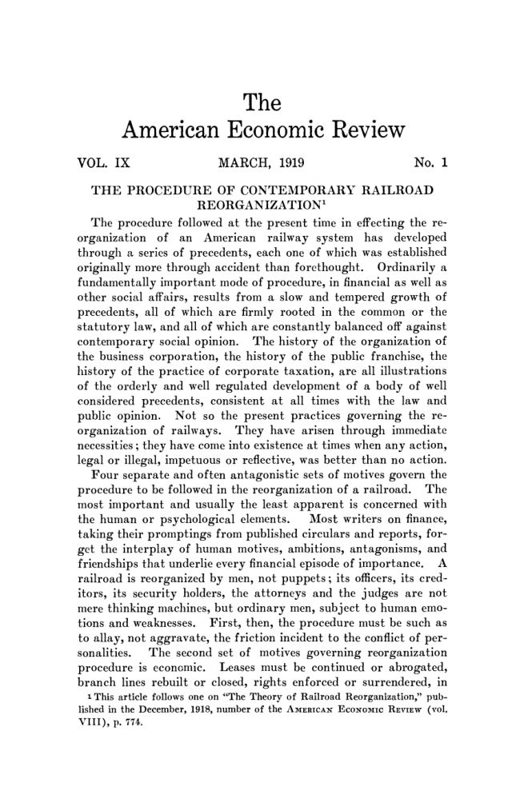

O paradoxo do imposto de guerra e o preço do papel fixado em juízo
Leitura: 13 min
Davenport mostra como os trabalhadores pagaram duas vezes pela guerra; Haney analisa o preço do papel fixado por um tribunal; Dewing, Putnam e Eberle tratam de ferrovias falidas, crédito agrícola e rotatividade.


Em 18 de junho de 1918, a Federal Trade Commission fixou em US$ 3,10 por cem libras, posto na fábrica, o preço máximo do papel de imprensa em bobinas vendido por dez fabricantes. Os fabricantes recorreram, e em 25 de setembro um tribunal federal de apelação, agindo como árbitro, elevou o preço para US$ 3,50. Lewis H. Haney examina o caso no número de março de 1919 da American Economic Review como um precedente raro: um tribunal fixando o preço justo de uma mercadoria produzida por empresas concorrentes, fora dos poderes de guerra.
É o primeiro número depois do armistício, e quase todos os artigos olham para as instituições que a guerra deixou ou pôs à prova. Arthur S. Dewing descreve, passo a passo, como se reorganiza uma ferrovia falida; H. J. Davenport, da Cornell University, retoma a tese de John Stuart Mill de que os trabalhadores podem pagar duas vezes por uma guerra; Haney, de Washington, analisa a fixação do preço do papel; George E. Putnam, da Washington University, faz o balanço dos dois primeiros anos do sistema federal de crédito agrícola; e George J. Eberle, da University of Wisconsin, responde a Paul H. Douglas sobre a rotatividade da mão de obra. Seguem-se resenhas, livros novos, documentos, periódicos e as notas.
Como se reorganiza uma ferrovia falida?
Arthur S. Dewing · “The Procedure of Contemporary Railroad Reorganization” · pp. 1–33
Arthur S. Dewing continua um artigo de dezembro de 1918 sobre a teoria da reorganização ferroviária. Sua tese é que o procedimento se formou por precedentes criados mais por acidente que por previsão, em momentos em que qualquer ação, legal ou ilegal, era melhor que nenhuma. Quatro conjuntos de motivos o governam: os humanos, porque uma ferrovia é reorganizada por homens, não por bonecos; os econômicos, resumidos na pergunta de se cada arrendamento ou ramal é lucrativo; os jurídicos; e, mais recentemente, as exigências das comissões de serviço público.
Os passos são uniformes. Primeiro cai o crédito: os títulos perdem cotação, a empresa paga juros crescentes e toma notas de curto prazo, e o material rodante se deteriora. Depois vêm os comitês de proteção, um dos acionistas, em geral dominado pelos antigos diretores, e vários de debenturistas, formados pelos bancos que venderam os títulos. Na reorganização da Union Pacific houve quinze comitês; a tendência agora é ter poucos, com homens de reputação nacional, e um comitê geral que prepara o plano.
O caso da Wabash, em 1884, inaugurou a administração judicial consensual: a própria empresa pediu ao tribunal federal a nomeação de administradores judiciais, os receivers, e a Suprema Corte a sustentou. A partir daí, um credor amigo, residente em outro estado, assina a petição preparada pelos advogados da ferrovia, e um dos administradores costuma ser um antigo dirigente. A regra de Fosdick v. Schall, de 1879, dá às despesas operacionais correntes prioridade sobre os juros das debêntures.
O fim é a venda judicial, uma ficção legal: o tribunal fixa um preço mínimo, o único licitante é o comitê de reorganização, e os credores que não aderiram ao plano, os chamados strikers, precisam ser pagos ou vencidos em juízo. Forma-se então a nova empresa, com o mesmo nome, trocando-se apenas railroad por railway.
Os trabalhadores pagam duas vezes pela guerra?
H. J. Davenport (Cornell University) · “The War-Tax Paradox” · pp. 35–46
H. J. Davenport parte da tese de John Stuart Mill de que uma guerra pode ser paga duas vezes à custa dos salários: uma vez quando os recursos são tirados do capital que paga salários, outra quando os títulos da dívida são resgatados com impostos. Davenport rejeita o fundamento de Mill, a doutrina do fundo de salários, mas sustenta que o intuito era certo. O consumo de guerra não tem futuro: armas e comida têm de ser produzidas agora. Os títulos não adiam o pagamento; adiam os impostos e garantem a quem adiantou recursos uma indenização futura paga por outros.
Seu cálculo com os números de antes da guerra mostra por que as massas têm de contribuir. Com renda nacional de US$ 40 bilhões e orçamento de guerra de US$ 15 bilhões, perto de dois quintos da renda, nem um imposto de 100% sobre as rendas altas bastaria. As declarações de 1914 registravam menos de 400 mil rendas acima de US$ 3.000, uma para cada setenta famílias.
O mecanismo é a inflação. Os preços sobem antes dos salários; a diferença vira lucro; o trabalhador paga sua parte da guerra pela queda do salário real. Isso, para Davenport, era inevitável. O erro foi outro: os empregadores, cobradores dessa contribuição, compraram títulos com os lucros em vez de pagar impostos, e os títulos se tornaram dívida do trabalhador como futuro contribuinte.
“O dano não estava em que os trabalhadores não recebessem os títulos [...], mas em que alguém recebesse títulos.” (“not ... that the laborers did not get the bonds ... but the harm was that anybody got any bonds”)
Davenport não condena os salários reais baixos, que a guerra tornava inevitáveis, nem os lucros, desde que fossem absorvidos por impostos. O dano estava nos títulos, sobre os quais alguém terá de ser tributado no futuro para pagar juros e principal. Só uma adaptação radical do sistema tributário, que ele julga quase impraticável, poderia corrigir isso.
Um tribunal pode fixar o preço justo do papel de imprensa?
Lewis H. Haney (Washington, D. C.) · “Price Fixing in a Competitive Industry: A Pioneer Case” · pp. 47–56
Em 1916, a Federal Trade Commission investigou a indústria de papel de imprensa e tentou negociar preços estáveis com os fabricantes. As negociações pararam em maio de 1917, quando um grande júri federal de Nova York indiciou vários deles. Em 26 de novembro de 1917, o procurador-geral firmou um acordo pelo qual a comissão fixaria os preços máximos de dez empresas durante a guerra e três meses depois, com recurso a um tribunal de apelação federal como árbitro. Haney avisa, numa nota, que não pretende defender a fixação de preços.
Os fabricantes pediam que a madeira entrasse no custo pelo valor de mercado, um acréscimo de 35% no custo da madeira, um valor de empresa em funcionamento de cerca de 17% dos bens tangíveis e retorno de 18% a 20%. Os editores de jornais respondiam que uma fábrica de papel não é serviço público e que a International Paper ganharia US$ 18 por tonelada, quando em vinte anos ganhara em média não mais de US$ 3.
O tribunal adotou princípios dos serviços públicos: valor presente depreciado a preços de antes da guerra, custo médio das empresas e madeira a preço de mercado. Haney critica três pontos. Não houve atenção ao custo marginal; confundiram-se custo e valor, como ao pôr no custo o valor de mercado da madeira própria, que inclui um lucro; e não se entendeu a diferença entre um serviço público, monopólio essencial, e uma indústria concorrente.
Como base do investimento, Haney propõe o valor efetivamente aplicado no negócio, na medida em que tenha sido aplicado com honestidade e prudência, sem goodwill nem valor de empresa em funcionamento que não tenham sido pagos. E o retorno deveria permitir a sobrevivência das empresas eficientes, não a de todas.
O que o crédito agrícola federal fez em dois anos?
George E. Putnam (Washington University) · “The Federal Farm Loan System” · pp. 57–78
George E. Putnam, que analisara a lei de crédito agrícola de 1916 na revista em dezembro daquele ano, faz o balanço da implantação. A lei, diz, foi revolucionária: rompeu com a tradição americana de hipotecas rurais e combinou três grupos de reformadores, os do empréstimo direto do governo, os da cooperação e os da iniciativa privada. O conselho federal ouviu agricultores em quarenta e quatro estados, dividiu o país em doze distritos, juntando estados de títulos hipotecários pouco conhecidos com estados de títulos prestigiados, e escolheu cidades de vocação agrícola, como Springfield em vez de Boston e Berkeley em vez de San Francisco.
O governo subscreveu US$ 8.891.270 do capital dos bancos. A primeira associação nacional de crédito agrícola recebeu carta em 27 de março de 1917. Os títulos de 4,5% foram vendidos por um consórcio de bancos de investimento, e os empréstimos começaram a 5%. A guerra mudou as condições: os juros subiram, o empréstimo foi elevado a 5,5% em 6 de dezembro de 1917, uma emenda de 18 de janeiro de 1918 autorizou o Tesouro a comprar até US$ 100 milhões de títulos por ano fiscal, e em maio os títulos passaram a 5%.
A demanda veio do Oeste e do Sul, onde os juros eram altos: o Sul recebeu 32,5% dos empréstimos, tendo cerca de 16% da dívida hipotecária rural do país. Os agentes previstos na lei quase não funcionaram, sete ao todo, e os bancos de terras por ações eram só nove. Putnam acha que dez distritos teriam bastado e duvida da utilidade das associações; o sistema teria mais êxito se a cooperação fosse voluntária.
Toda rotatividade da mão de obra é um mal?
George J. Eberle (University of Wisconsin) · “Labor Turnover” · pp. 79–82
George J. Eberle responde ao artigo de Paul H. Douglas publicado na revista em junho de 1918. Reconhece o valor do que Douglas disse sobre a definição, a extensão e o custo da rotatividade, mas critica a parte sobre causas e remédios em dois pontos: Douglas não mostrou que alguma rotatividade é desejável e quase ignorou um remédio importante, a casa própria.
O primeiro ponto é a seleção pela experiência. Por melhores que sejam os testes físicos e mentais, só o trabalho mostra se o homem está no lugar certo, e a satisfação conta tanto quanto a capacidade. Muitos trocam de emprego até chegar à ferrovia e ficam ali a vida toda. A capacidade muda com a idade, os métodos mudam com as invenções, e há administradores de siderúrgicas que começaram ganhando um dólar por dia. A rotatividade, diz Eberle, é sinal do estado dinâmico de Mill.
“A rotatividade readapta o trabalhador ao trabalho.” (“Labor turnover readjusts the worker to the work.”)
O estudo do problema deveria, portanto, separar duas tarefas: definir e desestimular a rotatividade indesejável, e definir e estimular a desejável. Para a primeira, Eberle propõe a casa própria. O inquilino de casa coletiva muda à menor provocação; o proprietário tem interesse econômico na cidade como contribuinte, é mais responsável como cidadão e como empregado, e encontra na casa uma via de expressão que o trabalho monótono não dá. Por isso o urbanista deveria parcelar a terra de modo a oferecer lotes ao alcance do operário e do escriturário, com bom transporte.
Para o trabalhador empregado em tarefa monótona, acrescenta Eberle, a casa seria fonte de atividade mental e, nas pequenas tarefas domésticas, de exercício físico; o trabalho regular deixaria de ser um fim em si e passaria a ser meio para a formação do cidadão.
Eberle contrapõe esse ideal à habitação coletiva europeia e cita o relatório de um comitê da Amalgamated Street Railway Employees of America, segundo o qual poucos colegas europeus tinham casa própria. Numa nota final, sugere que a American Economic Association estude as relações entre moradia, urbanismo e rotatividade.
O que mais há na edição?
As resenhas incluem The Economics of Progress, de J. M. Robertson, por Lewis H. Haney; The Theory of Environment, de Armin Hajman Koller, por John Graham Brooks; Democracy after the War, de J. A. Hobson, por H. G. Moulton; e Economic and Social History of Chowan County, North Carolina, 1880–1915, de W. Scott Boyce, por J. G. de Roulhac Hamilton. As listas de livros novos cobrem as várias áreas da economia. A seção de documentos trata das fontes oficiais sobre os problemas de reconstrução nos países estrangeiros, e as notas informam que o Hand Book da associação não foi publicado no verão de 1918 porque muitos membros estavam em trabalho de guerra.
Na minha leitura
Na minha leitura, a edição trata do custo e de quem o carrega. Davenport separa o custo real da guerra, pago no presente com consumo perdido, do custo fiscal, que os títulos transferem para o futuro; Haney separa o custo de produção do valor de mercado, para mostrar que a madeira própria cobrada a preço de mercado embute um lucro; Dewing mostra a reorganização ferroviária como uma repartição de perdas entre acionistas e credores, decidida mais por negociação que por lei.
Putnam e Eberle aplicam o mesmo cuidado ao desenho institucional. O crédito agrícola federal reduziu o custo do empréstimo onde os juros eram altos, mas não pela via cooperativa que a lei imaginara; a rotatividade da mão de obra, para Eberle, tem uma parte que é custo e outra que é ajuste. Nos dois casos, a pergunta econômica é qual parte do fenômeno se quer reduzir e qual se quer preservar.
Glossário
- Administração judicial (receivership)
- gestão de uma empresa insolvente por administradores nomeados por um tribunal.
- Comitê de proteção
- grupo que representa uma classe de acionistas ou credores numa reorganização.
- Preço mínimo (upset price)
- valor abaixo do qual o tribunal não confirma a venda judicial da empresa.
- Fundo de salários
- doutrina clássica segundo a qual os salários são pagos de um estoque prévio de capital.
- Salário real
- salário medido pelo que compra, e não em unidades de moeda.
- Valor de empresa em funcionamento (going value)
- acréscimo ao valor dos bens tangíveis atribuído ao fato de a empresa já estar operando.
- Custo marginal
- custo de produzir a última unidade necessária para atender a produção desejada.
- Banco federal de terras
- banco de crédito hipotecário rural criado pela lei de 1916 em cada um de doze distritos.
- Associação nacional de crédito agrícola
- cooperativa de dez ou mais tomadores que intermedeia os empréstimos do banco federal de terras.
- Rotatividade da mão de obra
- proporção entre os contratados no ano e a força de trabalho que a empresa precisa manter.
Artigos (5)
- The Procedure of Contemporary Railroad Reorganization — Arthur S. Dewing (pp. 1–33) · resenha acima · JSTOR
- The War-Tax Paradox — H. J. Davenport (Cornell University) (pp. 35–46) · resenha acima · comentário completo · JSTOR
- Price Fixing in a Competitive Industry: A Pioneer Case — Lewis H. Haney (Washington, D. C.) (pp. 47–56) · resenha acima · comentário completo · JSTOR
- The Federal Farm Loan System — George E. Putnam (Washington University) (pp. 57–78) · resenha acima · JSTOR
- Labor Turnover — George J. Eberle (University of Wisconsin) (pp. 79–82) · resenha acima · JSTOR
Resenhas (4)
- J. M. Robertson, The Economics of Progress — Lewis H. Haney (pp. 83–85). Resenha de Lewis H. Haney. JSTOR
- Armin Hajman Koller, The Theory of Environment — John Graham Brooks (pp. 85–87). Resenha de John Graham Brooks. JSTOR
- J. A. Hobson, Democracy after the War — H. G. Moulton (pp. 91–93). Resenha de H. G. Moulton. JSTOR
- W. Scott Boyce, Economic and Social History of Chowan County, North Carolina, 1880–1915 — J. G. de Roulhac Hamilton (pp. 93–95). Resenha de J. G. de Roulhac Hamilton. JSTOR
Novos livros (16)
- New Books (pp. 87–90). Lista de livros recentes da seção de obras gerais, teoria e sua história, com notas breves. JSTOR
- New Books (pp. 96–100). Lista de livros recentes da seção de história econômica e geografia, com notas breves. JSTOR
- New Books (pp. 100–101). Lista de livros recentes, com notas breves. JSTOR
- New Books (pp. 101–102). Lista de livros recentes, com notas breves. JSTOR
- New Books (pp. 102–106). Lista de livros recentes, com notas breves. JSTOR
- New Books (pp. 106–108). Lista de livros recentes, com notas breves. JSTOR
- New Books (pp. 108–115). Lista de livros recentes, com notas breves. JSTOR
- New Books (pp. 115–124). Lista de livros recentes, com notas breves. JSTOR
- New Books (pp. 124–132). Lista de livros recentes, com notas breves. JSTOR
- New Books (pp. 132–135). Lista de livros recentes, com notas breves. JSTOR
- New Books (pp. 136–137). Lista de livros recentes, com notas breves. JSTOR
- New Books (pp. 137–141). Lista de livros recentes, com notas breves. JSTOR
- New Books (pp. 141–146). Lista de livros recentes, com notas breves. JSTOR
- New Books (pp. 146). Lista de livros recentes, com notas breves. JSTOR
- New Books (pp. 146–147). Lista de livros recentes, com notas breves. JSTOR
- New Books (pp. 148–153). Lista de livros recentes, com notas breves. JSTOR
Documentos, periódicos e notas (3)
- Documents, Reports, and Legislation — redação e colaboradores (pp. 154–178). Resumos de documentos oficiais, a começar pelas fontes sobre os problemas de reconstrução nos países estrangeiros. JSTOR
- Periodicals — redação e colaboradores (pp. 179–200). Resumos de artigos de periódicos americanos e estrangeiros, por área. JSTOR
- Notes — redação (pp. 201–212). Notas da associação e do meio acadêmico, a começar pelo adiamento do Hand Book e pelos novos membros admitidos desde 1º de novembro de 1918. JSTOR
Fontes
- The Procedure of Contemporary Railroad Reorganization (pp. 1–33). JSTOR · Internet Archive (PDF)
- The War-Tax Paradox (pp. 35–46). JSTOR · Internet Archive (PDF)
- Price Fixing in a Competitive Industry: A Pioneer Case (pp. 47–56). JSTOR · Internet Archive (PDF)
- The Federal Farm Loan System (pp. 57–78). JSTOR · Internet Archive (PDF)
- Labor Turnover (pp. 79–82). JSTOR · Internet Archive (PDF)
- [untitled] The American Economic Review, (1919-03-01), pages 83-85 (pp. 83–85). JSTOR · Internet Archive (PDF)
- [untitled] The American Economic Review, (1919-03-01), pages 85-87 (pp. 85–87). JSTOR · Internet Archive (PDF)
- New Books (pp. 87–90). JSTOR · Internet Archive (PDF)
- [untitled] The American Economic Review, (1919-03-01), pages 91-93 (pp. 91–93). JSTOR · Internet Archive (PDF)
- [untitled] The American Economic Review, (1919-03-01), pages 93-95 (pp. 93–95). JSTOR · Internet Archive (PDF)
- New Books (pp. 96–100). JSTOR · Internet Archive (PDF)
- New Books (pp. 100–101). JSTOR · Internet Archive (PDF)
- New Books (pp. 101–102). JSTOR · Internet Archive (PDF)
- New Books (pp. 102–106). JSTOR · Internet Archive (PDF)
- New Books (pp. 106–108). JSTOR · Internet Archive (PDF)
- New Books (pp. 108–115). JSTOR · Internet Archive (PDF)
- New Books (pp. 115–124). JSTOR · Internet Archive (PDF)
- New Books (pp. 124–132). JSTOR · Internet Archive (PDF)
- New Books (pp. 132–135). JSTOR · Internet Archive (PDF)
- New Books (pp. 136–137). JSTOR · Internet Archive (PDF)
- New Books (pp. 137–141). JSTOR · Internet Archive (PDF)
- New Books (pp. 141–146). JSTOR · Internet Archive (PDF)
- New Books (pp. 146). JSTOR · Internet Archive (PDF)
- New Books (pp. 146–147). JSTOR · Internet Archive (PDF)
- New Books (pp. 148–153). JSTOR · Internet Archive (PDF)
- Documents, Reports, and Legislation (pp. 154–178). JSTOR · Internet Archive (PDF)
- Periodicals (pp. 179–200). JSTOR · Internet Archive (PDF)
- Notes (pp. 201–212). JSTOR · Internet Archive (PDF)
- Sumário da edição no JSTOR: The American Economic Review, vol. 9, nº 1.
Documento em domínio público (EUA, publicado antes de 1931), via JSTOR Early Journal Content e Internet Archive. Resumo e comentário do autor deste site, sem afiliação com a American Economic Association. Encontrou um erro? Escreva: a correção é publicada no próprio texto, com data.
← Nº 154 · Um índice da dependência, o custo de crescer e as ferrovias falidas Nº 156 · Richmond, 1918: economistas no serviço público e a reconstrução →